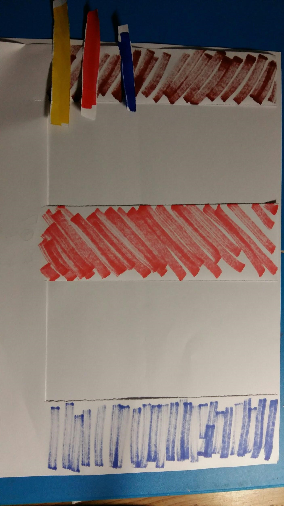

河內塔(第三頁)
首頁
動機介紹
河內塔作者介紹
遊戲介紹
河內塔作者介紹
發明者:愛德華·盧卡斯 法國數學家
弗朗索瓦·愛德華·阿納托爾·盧卡斯（法語：François Édouard Anatole Lucas
因研究費波那契數列而知名。相關的盧卡斯數列和盧卡斯數以他的名字命名。
出生 1842年4月4日 法蘭西王國亞眠
逝世 1891年10月3日（49歲）
他發現了一種優雅的二進制解法來解決九連環難題。1883年，他還發明了河內塔謎題
作者照片

上圖為河內塔示意圖